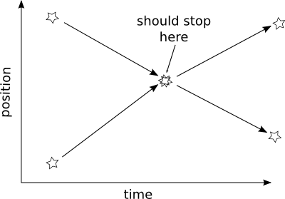

Stopping Conditions¶
Introduction¶
Codes in AMUSE evolve their models in three loops, the “inner”, the “outer” loop, and the “script” loop. The “inner” loop is controlled by the code and evolves the model in a sufficiently small steps to limit errors and be able to simulate important physics. The “outer” loop invokes the “inner” loop until a condition is met specified by the AMUSE script. The AMUSE script (or the “script” loop) interacts with the “outer” loop.
![digraph layers0 {
fontsize=10.0;
node [fontsize=10.0,shape=box, style=filled, fillcolor=lightyellow, width=1.5];
subgraph cluster0 {
fontsize=10.0;
style=filled;
color=azure2;
labeljust="l";
label="AMUSE Script";
"script loop";
}
subgraph cluster1 {
fontsize=10.0;
style=filled;
color=azure2;
labeljust="l";
label="Community Code";
"outer loop";
"inner loop";
}
"script loop" -> "outer loop"[minlen=2];
"outer loop" -> "inner loop";
"script loop" -> "script loop" [dir="back", constraint=false,minlen=2, headport="se", tailport="ne"];
"outer loop" -> "outer loop"[dir="back", constraint=false, headport="se", tailport="ne"];
"inner loop" -> "inner loop"[dir="back", constraint=false, headport="se", tailport="ne"];
}](../_images/graphviz-18e1b48a57422f40add7c48265816e746892ae5a.png)
In AMUSE the outer loop is always limited by the model time. Every
evolve_model() call has one argument, the model time. When the
simulation is about to go beyond this time (or is at this time),
control is returned to the caller.
This process is shown in the following code example.
// example outer loop
void outer_loop(double end_time)
{
while(model_time < end_time)
{
...
inner_loop()
...
model_time += delta_time_for_this_step
}
return
}
The model time is often enough to control the loop but some situations call for an earlier break in the loop when the model time has not reached the end time. To be able to break the outer loop before the end time is reached, the framework supports stopping conditions. The following code example shows how these conditions might work in a C code.
// example outer loop with stopping conditions
void outer_loop(double end_time)
{
int special_condition_was_met = 0;
while(model_time < end_time)
{
...
inner_loop()
...
check_if_special_conditions_are_met();
...
model_time += delta_time_for_this_step
...
if(special_condition_was_met) {
break;
}
}
return
}
For example, a code might be able to detect a collision of two stars and the user wants to handle this event. If the code would proceed to the end time, the collision is long over and the user has no way to know about the collision and cannot handle it.
The stopping conditions framework in AMUSE provides functionality for using and implementing stopping conditions. This framework uses simple tables in the codes and translates these tables to objects in the python scripts. In the next section the use of this framework is described. In the final section the implementation of the framework in a community code is described.
Using stopping conditions¶
All interaction with the stopping conditions of a code
is via the stopping_conditions attribute of a CodeInterface
class. When the stopping_conditions attribute is
queried it returns a StoppingConditions object. All
StoppingConditions objects have an attribute for each
stopping condition supported by AMUSE. The
attributes have the following names:
- collision_detection
- The outer loop breaks when two stars connect
- pair_detection
- The outer loop breaks when two stars pair, possibly creating a binary star.
- escaper_detection
- The outer loop breaks when a star escapes the simulation (is no longer gravitationally bound to the other stars)
- timeout_detection
- The outer loop breaks when a certain amount of computer (wall-clock) time has elapsed.
- number_of_steps_detection
- The outer loop breaks when a certain amount of steps (iterations) is reached.
Note
CodeInterface objects provide a object oriented
interface to each code.
All StoppingConditions objects provide a string
representation describing the supported conditions and their
states.
>>> from amuse.lab import *
>>> code = Hermite()
>>> print code.stopping_conditions
Stopping conditions of a 'Hermite' object
* supported conditions: collision_detection, pair_detection, timeout_detection
* enabled conditions: none
* set conditions: none
>>> code.stop()
For every attribute the user can determine if it is
supported, if it was enabled or if it was hit during
the evolve() loop.
>>> from amuse.lab import *
>>> code = Hermite()
>>> print code.stopping_conditions.collision_detection.is_supported()
True
>>> print code.stopping_conditions.collision_detection.is_enabled()
False
>>> print code.stopping_conditions.collision_detection.is_set()
False
>>> code.stop()
When a stopping condition was hit during the inner or outer loop
evaluation the user can query which particles were involved. The
particles involved are stored in columns. For pair wise detections
(collection and pair) the condition provides two columns. The first
column contains all the first particles of the pairs and the second
column contains all the second particles of the pairs. These columns
can be queried with the particles() method on a stopping
condition attribute. This method takes one argument, the column
index and returns a particle subset with the involved particles.
| Pair | particles(0) | particles(1) |
|---|---|---|
| 1 + 2 | 1 | 2 |
| 5 + 11 | 5 | 11 |
| 12 + 10 | 12 | 10 |
>>> from amuse.lab import *
>>> code = Hermite()
>>> sc = code.stopping_conditions.collision_detection
>>> sc.enable()
>>> code.evolve_model(0.1 | nbody_system.time)
>>> print sc.is_set()
True
>>> print sc.particles(0)
...
>>> pair = sc.particles(0)[0], sc.particles(1)[0]
>>> code.stop()
Implementing stopping conditions¶
All codes supporting stopping conditions must implement the
StoppingConditionInterface interface. This can be easily
done by inheriting from the StoppingConditionInterface and
implementing all the functions defined in the interface:
class MyCodeInterface(CodeInterface, StoppingConditionInterface):
...
This StoppingConditionInterface interface models the interface to a
simple data model, best described as two tables:
- Defined stopping conditions table
This table list the types of stopping conditions and if these are supported by the code, and if so, if these are enabled by the user.
type supported enabled int int read only int read/write 0 0 0 1 1 0 2 0 0 3 1 0 - type
- The type of the stopping condition, integer between 0 and N. Defined by the framework
- supported
- 1 if the stopping condition is supported, 0 otherwise. Needs to be set by the implementer
- enabled
- 1 if enabled by the user, 0 otherwise. Implementer must provide a mechanism to set and unset this field.
- Set stopping conditions table
This table has a row for each stopping condition set during the outer and inner loop evaluations. Every row lists the type of condition set and which particles were involved (if any). The id of the last particle in the list must be -1.
type particle[0] particle(1) … particle(n) int int int int int 1 1 2 -1 -1 1 10 12 -1 -1 3 -1 … 1 11 20 … … 3 -1 - type
- The type of the stopping condition, integer between 0 and N. Defined by the framework. Set by the code
- particle(0…n)
- Index of the particle involved in the stopping condition. The index of the last particle must be -1
-
class
amuse.support.codes.stopping_conditions.StoppingConditionInterface¶ -
disable_stopping_condition¶ Will disable the stopping if it is supported
int32 disable_stopping_condition(int32 type);
FUNCTION disable_stopping_condition(type) INTEGER :: type INTEGER :: disable_stopping_condition END FUNCTION
Parameters: type (int32, IN) – The index of the stopping condition Returns: 0 - OK -1 - ERROR
-
enable_stopping_condition¶ Will enable the stopping if it is supported
int32 enable_stopping_condition(int32 type);
FUNCTION enable_stopping_condition(type) INTEGER :: type INTEGER :: enable_stopping_condition END FUNCTION
Parameters: type (int32, IN) – The type index of the stopping condition Returns: 0 - OK -1 - ERROR
-
get_number_of_stopping_conditions_set¶ Return the number of stopping conditions set, one condition can be set multiple times.
Stopping conditions are set when the code determines that the conditions are met. The objects or information about the condition can be retrieved with the get_stopping_condition_info method.
int32 get_number_of_stopping_conditions_set(int32 * result);
FUNCTION get_number_of_stopping_conditions_set(result) INTEGER :: result INTEGER :: get_number_of_stopping_conditions_set END FUNCTION
Parameters: result (int32, OUT) – > 1 if any stopping condition is set Returns: 0 - OK -1 - ERROR
-
get_stopping_condition_info¶ Generic function for getting the information connected to a stopping condition. Index can be between 0 and the result of the :method:`get_number_of_stopping_conditions_set` method.
int32 get_stopping_condition_info(int32 index, int32 * type, int32 * number_of_particles);
FUNCTION get_stopping_condition_info(index, type, number_of_particles) INTEGER :: index, type, number_of_particles INTEGER :: get_stopping_condition_info END FUNCTION
Parameters: - index (int32, IN) – Index in the array[0,number_of_stopping_conditions_set>
- type (int32, OUT) – Kind of the condition, can be used to retrieve specific information
- number_of_particles (int32, OUT) – Number of particles that met this condition
Returns: 0 - OK -1 - ERROR
-
get_stopping_condition_maximum_density_parameter¶ int32 get_stopping_condition_maximum_density_parameter(float64 * value);
FUNCTION get_stopping_condition_maximum_density_parameter(value) DOUBLE PRECISION :: value INTEGER :: get_stopping_condition_maximum_density_parameter END FUNCTION
Parameters: value (float64, OUT) – Returns:
-
get_stopping_condition_maximum_internal_energy_parameter¶ int32 get_stopping_condition_maximum_internal_energy_parameter( float64 * value);
FUNCTION get_stopping_condition_maximum_internal_energy_parameter(value) DOUBLE PRECISION :: value INTEGER :: get_stopping_condition_maximum_internal_energy_parameter END FUNCTION
Parameters: value (float64, OUT) – Returns:
-
get_stopping_condition_minimum_density_parameter¶ int32 get_stopping_condition_minimum_density_parameter(float64 * value);
FUNCTION get_stopping_condition_minimum_density_parameter(value) DOUBLE PRECISION :: value INTEGER :: get_stopping_condition_minimum_density_parameter END FUNCTION
Parameters: value (float64, OUT) – Returns:
-
get_stopping_condition_minimum_internal_energy_parameter¶ int32 get_stopping_condition_minimum_internal_energy_parameter( float64 * value);
FUNCTION get_stopping_condition_minimum_internal_energy_parameter(value) DOUBLE PRECISION :: value INTEGER :: get_stopping_condition_minimum_internal_energy_parameter END FUNCTION
Parameters: value (float64, OUT) – Returns:
-
get_stopping_condition_number_of_steps_parameter¶ Retrieve max inner loop evaluations.
int32 get_stopping_condition_number_of_steps_parameter(int32 * value);
FUNCTION get_stopping_condition_number_of_steps_parameter(value) INTEGER :: value INTEGER :: get_stopping_condition_number_of_steps_parameter END FUNCTION
Parameters: value (int32, OUT) – Current number of avaible inner loop evaluations Returns: 0 - OK -1 - ERROR
-
get_stopping_condition_out_of_box_parameter¶ Get size of box
int32 get_stopping_condition_out_of_box_parameter(float64 * value);
FUNCTION get_stopping_condition_out_of_box_parameter(value) DOUBLE PRECISION :: value INTEGER :: get_stopping_condition_out_of_box_parameter END FUNCTION
Parameters: value (float64, OUT) – Size of box Returns: 0 - OK -1 - Value out of range
-
get_stopping_condition_out_of_box_use_center_of_mass_parameter¶ If True use the center of mass to determine the location of the box, if False use (0,0,0)
int32 get_stopping_condition_out_of_box_use_center_of_mass_parameter( _Bool * value);
FUNCTION get_stopping_condition_out_of_box_use_center_of_mass_parameter( & value) LOGICAL :: value INTEGER :: get_stopping_condition_out_of_box_use_center_of_mass_parameter END FUNCTION
Parameters: value (bool, OUT) – True if detection should use center of mass Returns: 0 - OK -1 - Value out of range
-
get_stopping_condition_particle_index¶ For collision detection
int32 get_stopping_condition_particle_index(int32 index, int32 index_of_the_column, int32 * index_of_particle);
FUNCTION get_stopping_condition_particle_index(index, & index_of_the_column, index_of_particle) INTEGER :: index, index_of_the_column, index_of_particle INTEGER :: get_stopping_condition_particle_index END FUNCTION
Parameters: - index (int32, IN) – Index in the array[0,number_of_stopping_conditions_set>
- index_of_the_column (int32, IN) – Column index involved in the condition (for pair collisons 0 and 1 are possible)
- index_of_particle (int32, OUT) – Set to the identifier of particle[index_of_the_column][index]
Returns: 0 - OK -1 - ERROR
-
get_stopping_condition_timeout_parameter¶ Retrieve max computer time available (in seconds).
int32 get_stopping_condition_timeout_parameter(float64 * value);
FUNCTION get_stopping_condition_timeout_parameter(value) DOUBLE PRECISION :: value INTEGER :: get_stopping_condition_timeout_parameter END FUNCTION
Parameters: value (float64, OUT) – Current value of avaible wallclock time in seconds Returns: 0 - OK -1 - ERROR
-
has_stopping_condition¶ Return 1 if the stopping condition with the given index is supported by the code, 0 otherwise.
int32 has_stopping_condition(int32 type, int32 * result);
FUNCTION has_stopping_condition(type, result) INTEGER :: type, result INTEGER :: has_stopping_condition END FUNCTION
Parameters: - type (int32, IN) – The type index of the stopping condition
- result (int32, OUT) – 1 if the stopping condition is supported
Returns: 0 - OK -1 - ERROR
-
is_stopping_condition_enabled¶ Return 1 if the stopping condition with the given index is enabled,0 otherwise.
int32 is_stopping_condition_enabled(int32 type, int32 * result);
FUNCTION is_stopping_condition_enabled(type, result) INTEGER :: type, result INTEGER :: is_stopping_condition_enabled END FUNCTION
Parameters: - type (int32, IN) – The index of the stopping condition
- result (int32, OUT) – 1 if the stopping condition is enabled
Returns: 0 - OK -1 - ERROR
-
is_stopping_condition_set¶ Return 1 if the stopping condition with the given index is enabled,0 otherwise.
int32 is_stopping_condition_set(int32 type, int32 * result);
FUNCTION is_stopping_condition_set(type, result) INTEGER :: type, result INTEGER :: is_stopping_condition_set END FUNCTION
Parameters: - type (int32, IN) – The index of the stopping condition
- result (int32, OUT) – 1 if the stopping condition is enabled
Returns: 0 - OK -1 - ERROR
-
set_stopping_condition_maximum_density_parameter¶ int32 set_stopping_condition_maximum_density_parameter(float64 value);
FUNCTION set_stopping_condition_maximum_density_parameter(value) DOUBLE PRECISION :: value INTEGER :: set_stopping_condition_maximum_density_parameter END FUNCTION
Parameters: value (float64, IN) – Returns:
-
set_stopping_condition_maximum_internal_energy_parameter¶ int32 set_stopping_condition_maximum_internal_energy_parameter( float64 value);
FUNCTION set_stopping_condition_maximum_internal_energy_parameter(value) DOUBLE PRECISION :: value INTEGER :: set_stopping_condition_maximum_internal_energy_parameter END FUNCTION
Parameters: value (float64, IN) – Returns:
-
set_stopping_condition_minimum_density_parameter¶ int32 set_stopping_condition_minimum_density_parameter(float64 value);
FUNCTION set_stopping_condition_minimum_density_parameter(value) DOUBLE PRECISION :: value INTEGER :: set_stopping_condition_minimum_density_parameter END FUNCTION
Parameters: value (float64, IN) – Returns:
-
set_stopping_condition_minimum_internal_energy_parameter¶ int32 set_stopping_condition_minimum_internal_energy_parameter( float64 value);
FUNCTION set_stopping_condition_minimum_internal_energy_parameter(value) DOUBLE PRECISION :: value INTEGER :: set_stopping_condition_minimum_internal_energy_parameter END FUNCTION
Parameters: value (float64, IN) – Returns:
-
set_stopping_condition_number_of_steps_parameter¶ Set max inner loop evaluations.
int32 set_stopping_condition_number_of_steps_parameter(int32 value);
FUNCTION set_stopping_condition_number_of_steps_parameter(value) INTEGER :: value INTEGER :: set_stopping_condition_number_of_steps_parameter END FUNCTION
Parameters: value (int32, IN) – Available inner loop evaluations Returns: 0 - OK -1 - Value out of range
-
set_stopping_condition_out_of_box_parameter¶ Set size of box.
int32 set_stopping_condition_out_of_box_parameter(float64 value);
FUNCTION set_stopping_condition_out_of_box_parameter(value) DOUBLE PRECISION :: value INTEGER :: set_stopping_condition_out_of_box_parameter END FUNCTION
Parameters: value (float64, IN) – Size of box Returns: 0 - OK -1 - Value out of range
-
set_stopping_condition_out_of_box_use_center_of_mass_parameter¶ If True use the center of mass to determine the location of the box, if False use (0,0,0)
int32 set_stopping_condition_out_of_box_use_center_of_mass_parameter( _Bool value);
FUNCTION set_stopping_condition_out_of_box_use_center_of_mass_parameter( & value) LOGICAL :: value INTEGER :: set_stopping_condition_out_of_box_use_center_of_mass_parameter END FUNCTION
Parameters: value (bool, IN) – True if detection should use center of mass Returns: 0 - OK -1 - Value out of range
-
set_stopping_condition_timeout_parameter¶ Set max computer time available (in seconds).
int32 set_stopping_condition_timeout_parameter(float64 value);
FUNCTION set_stopping_condition_timeout_parameter(value) DOUBLE PRECISION :: value INTEGER :: set_stopping_condition_timeout_parameter END FUNCTION
Parameters: value (float64, IN) – Available wallclock time in seconds Returns: 0 - OK -1 - Value out of range
-
This interface contains a lot of functions and implementing it might be a time consuming task. To help implementing the interface, AMUSE provides a C library that does most of the table management, this library is described in the next section.
Using the stopping conditions library¶
The stopping conditions tables are implemented as a
static C library. This library is part of the AMUSE distribution
and can be found in the `lib/stopcond` directory.
The library implements all functions of the StoppingConditionInterface
interface and provides a number functions for the
code implementer to actually set and support
stopping conditions. The library does not implement any
stopping condition detection routines. These have to
be implemented on a per code basis. The functionality
of the library is limited to managing the stopping conditions
tables and the library has to be controlled by the code
so that stopping conditions are set.
The library implements the defined stopping conditions table as three long integers. These integers are used as bitmaps (the state of individual bits is used to determine if a condition is true or false). The individual bits can be tested with the following macros:
-
COLLISION_DETECTION_BITMAP¶
-
PAIR_DETECTION_BITMAP¶
-
ESCAPER_DETECTION_BITMAP¶
-
TIMEOUT_DETECTION_BITMAP¶
-
NUMBER_OF_STEPS_BITMAP¶
The three variables are not accessible directly from FORTRAN codes. The stopping condition library has special functions for FORTRAN to access them.
The three global variables are:
-
long
enabled_conditions¶
Individual bits are set when the user enables a stopping condition. Access in FORTRAN through:
INCLUDE "../../lib/stopcond/stopcond.inc"
INTEGER:: is_stopping_condition_enabled
INTEGER:: is_collision_detection_enabled
INTEGER:: error
error = is_stopping_condition_enabled(COLLISION_DETECTION, is_collision_detection_enabled)
-
long
set_conditions¶
Individual bits are set when a condition is detected by the
code. (the set_stopping_condition_info() will fill
this bitmap). Access in FORTRAN:
INCLUDE "../../lib/stopcond/stopcond.inc"
INTEGER:: is_stopping_condition_set
INTEGER:: is_collision_detection_set
INTEGER:: error
error = is_stopping_condition_set(COLLISION_DETECTION, is_collision_detection_set)
-
long
supported_conditions¶
set_supported_conditions()
Individual bits are set for supported conditions. This global must be defined by the code.
For a code that support collision detection and timeout detection the variable can be defined in c as:
set_support_for_condition(COLLISION_DETECTION); set_support_for_condition(PAIR_DETECTION);
- or in FORTRAN as:
INCLUDE "../../lib/stopcond/stopcond.inc" set_support_for_condition(COLLISION_DETECTION) set_support_for_condition(PAIR_DETECTION)
To refer to the type of a stopping condition, the library defines the following macros:
-
COLLISION_DETECTION¶
-
PAIR_DETECTION¶
-
ESCAPER_DETECTION¶
-
TIMEOUT_DETECTION¶
-
NUMBER_OF_STEPS_DETECTION¶
The following four functions can be used to set and reset the stopping conditions.
-
int
reset_stopping_conditions()¶ Resets all stopping conditions. Needs to be called just before entering the outer_loop
void outer_loop(double end_time) { reset_stopping_conditions() while(model_time < end_time) { ... } }
-
int
next_index_for_stopping_condition()¶ Reserves a row on the stopping conditions table. Needs to be called after detecting a stopping condition so that the code can fill in the stopping condition information.
if(COLLISION_DETECTION_BITMAP & enabled_conditions) { int row = next_index_for_stopping_condition(); set_stopping_condition_info(row, COLLISION_DETECTION); ... }
-
int
set_stopping_condition_info(int index, int type)¶ Sets the type of stopping condition encountered for the given row index. Use one of the predefined type macros for the type argument
set_stopping_condition_info(row, COLLISION_DETECTION);
-
int
set_stopping_condition_particle_index(int index, int column_index, int index_of_particle)¶ Sets the id of a particles involved in the stopping condition (only needed for stopping conditions with particles)
set_stopping_condition_info(row, COLLISION_DETECTION); set_stopping_condition_particle_index(stopping_index, 0, ident[i]); set_stopping_condition_particle_index(stopping_index, 1, ident[j]);
Stopping condtions with parameters¶
The timeout and number of steps stopping conditions are parameter based, i.e. the conditions are met if the outer loop took a certain time or a reached a certain number of steps (iterations). The parameters are accessed through the following procedures:
-
int set_stopping_condition_timeout_parameter(double value); Sets the computer (wall-clock) time parameter.
-
get_stopping_condition_timeout_parameter(double *value); Gets the computer (wall-clock) time parameter.
-
int set_stopping_condition_number_of_steps_parameter(int value); Sets the number of steps parameter.
-
int get_stopping_condition_number_of_steps_parameter(int *value); Gets the number of steps parameter.
For MPI enabled codes, the stopping conditions must be distributed and collected. The following three functions can be used to manage the MPI communication.
-
int
mpi_setup_stopping_conditions()¶ Setups some globals for MPI communication, this needs to be called once per code execution (for example in a
initialize_code()function)
-
int
mpi_distribute_stopping_conditions()¶ Distributes the state of the conditions, so each process knows which conditions are enabled by the user. Needs to be called when the parallel code is entered (and all other data is distributed).
-
int
mpi_collect_stopping_conditions()¶ Collects the individual tables of the set conditions and combines these to one table on the root process (MPI rank == 0). Needs to be called at the end of the parallel part of the code.
The procedure for adding stopping conditions is explained by the following steps.
Add compiler and linker flags to the build script or Makefile.
To use the
`stopcond`library, the compile and link steps of the community code must be changed. The following compiler flags need to be added:-I$(AMUSE_DIR)/lib/stopcond
For the link step the following linker flags are needed:
-L$(AMUSE_DIR)/lib/stopcond -lstopcondmpi
Include the header file and defining the globals
The name of the header file is “stopcond.h” and this header file needs to be included in all files referring to the stopping conditions.
#include <stopcond.h>
The code should take care of the setting of the
supported_conditionsbitmap in its initialization, e.g.:set_support_for_condition(COLLISION_DETECTION); set_support_for_condition(PAIR_DETECTION);
In FORTRAN include “stopcond.inc” in subroutines that require the constants.
INCLUDE "../../lib/stopcond/stopcond.inc" set_support_for_condition(COLLISION_DETECTION) set_support_for_condition(PAIR_DETECTION)
Check for a condition when it is enabled and set the condition if found. In c:
int is_collision_detection_enabled; is_stopping_condition_enabled(COLLISION_DETECTION, &is_collision_detection_enabled); if(is_collision_detection_enabled) { real sum_of_the_radii = radius_of_star[i] + radius_of_star[j]; if (distance_between_stars <= sum_of_the_radii) { int stopping_index = next_index_for_stopping_condition(); set_stopping_condition_info(stopping_index, COLLISION_DETECTION); set_stopping_condition_particle_index( stopping_index, 0, identifier_of_star[i] ); set_stopping_condition_particle_index( stopping_index, 1, identifier_of_star[j] ); } }
and in FORTRAN:
INCLUDE "../../lib/stopcond/stopcond.inc" INTEGER::is_stopping_conditions_enabled INTEGER::is_collision_detection_enabled, stopping_index INTEGER::error error = is_stopping_condition_enabled(COLLISION_DETECTION, is_collision_detection_enabled) !... IF is_collision_detection_enabled.EQ.1 THEN IF there_is_a_collision THEN stopping_index = next_index_for_stopping_conditions() error = set_stopping_condition_info(stopping_index, COLLISION_DETECTION) !... ENDIF ENDIF
Break the outer loop when any condition is set. The
set_conditionscan be tested:while(...) { ... if(set_conditions) { break; } }
INCLUDE "../../lib/stopcond/stopcond.inc" INTEGER::is_any_condition_set DO WHILE () !... IF (is_any_condition_set().EQ.1) EXIT END DO
A good example of a code implementing the stopping conditions is the “hermite0” community code. The code can be found in the ‘src/amuse/community/hermite0’ directory.